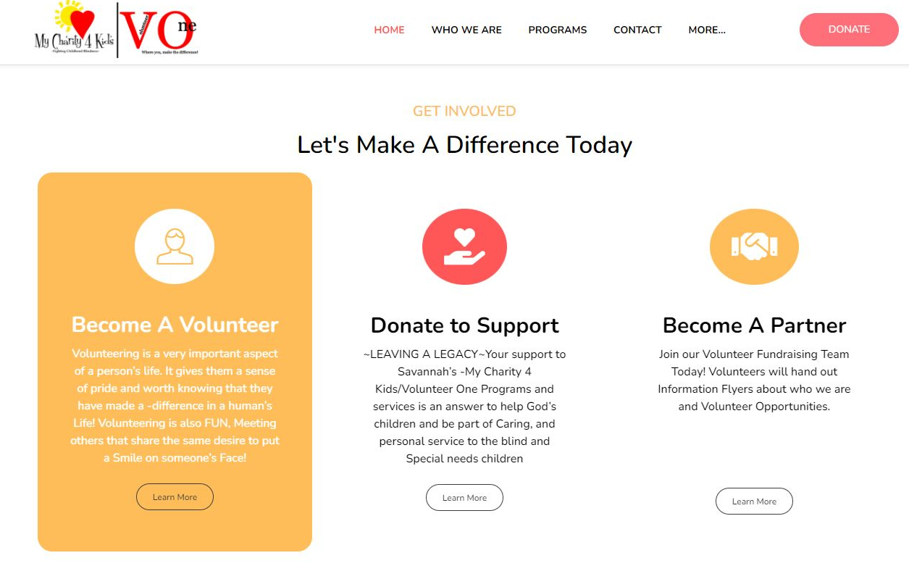

I dedicate my time to volunteer work with FTC and several charitable organizations such as Volunteer One (My Charity 4 Kids) and Udavum Karangal. Volunteer One focuses on providing meals to the homeless and individuals facing challenging circumstances. Udavum Karangal, on the other hand, serves as a comprehensive shelter and support system for people of all ages in need, including orphans.

To become a volunteer like me or to donate to Udavum Karangal, select the following link: www.mycharityforkids.org

To become a volunteer like me or to donate to Udavum Karangal, select the following link: www.myhelpinghands.org
Tutoring
I am currently tutoring Elementary and young middle schoolers to enhance their skills and interest in coding, cyber security and Math on a needed basis.